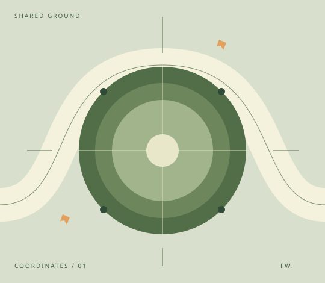

Look before you build.
Read the document, its spacing, its type, and the relationships between the parts.
A small, original demonstration page about shared work. Built to be taken apart, understood, and put together again.
See the practice
Read the document, its spacing, its type, and the relationships between the parts.
A frame becomes a section. A section becomes a place for words, images, and ideas.
Small, coordinated actions create something you can inspect, select, and use.
Watch the details emerge. Pause, replay, and compare the local result with the original.
An offline fixture bundled with Swarm Studio. The content and vector artwork were created for this demonstration.
Yes. This accordion uses native HTML details and summary elements, without JavaScript.
Real text, semantic sections, repeated cards, an image asset, responsive CSS and anchor navigation.